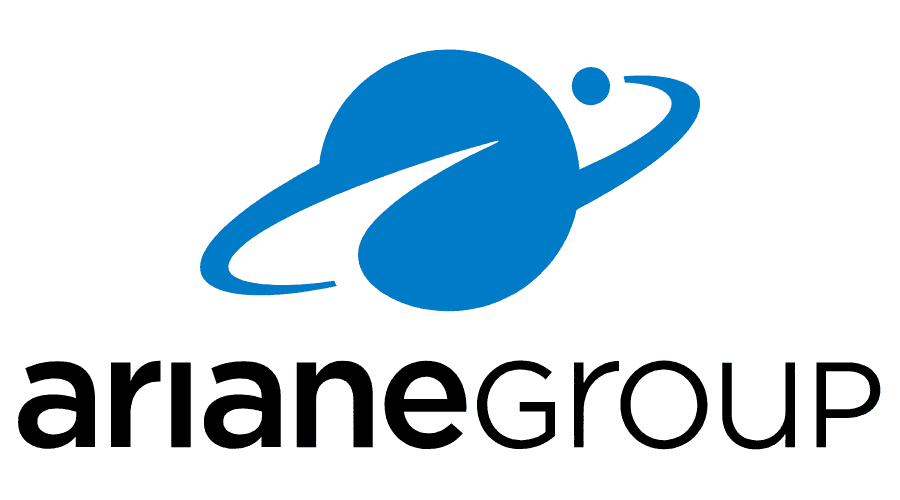
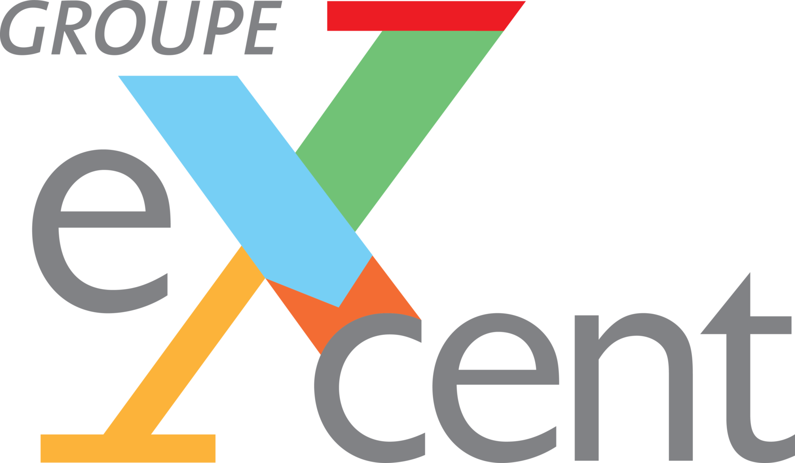
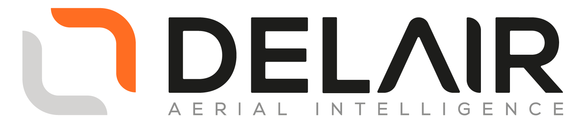

Ayant un fort attrait pour le secteur des transports et aérospatial, je suis un étudiant en troisième année à l'ENSIBS à Lorient. Autonome et méthodique, je suis une personne déterminée et motivée lorsque je me fixe un objectif.


